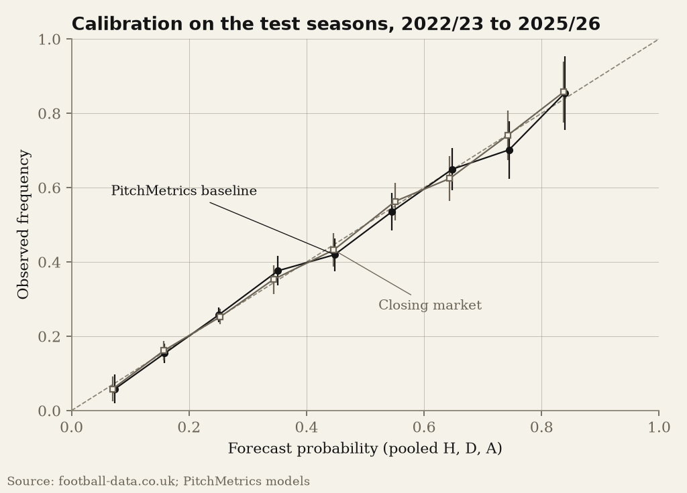
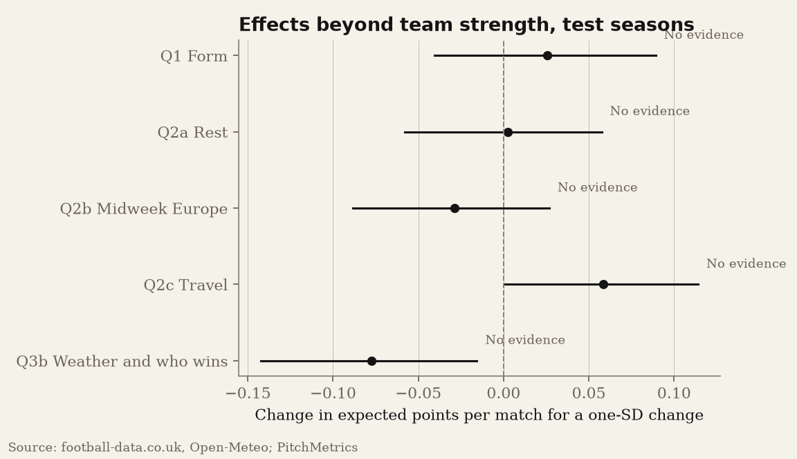
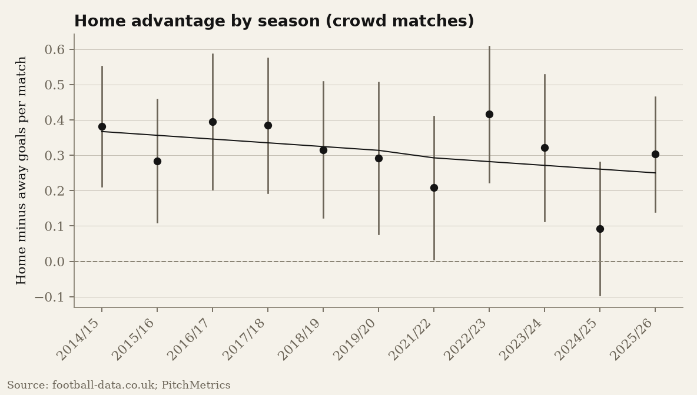
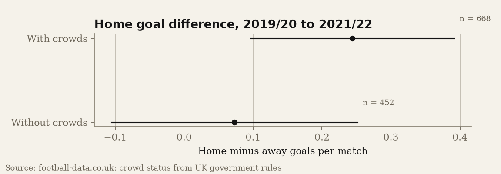

Form, rest, travel, weather and home advantage, tested against team strength and the closing market
Fans, pundits and managers explain results with form, fatigue, long trips, the weather and the crowd. This paper tests those explanations on 4,560 Premier League matches from 2014/15 to 2025/26, using a design written down and committed before any evaluation data were analysed. Every factor is tested on top of a model of team strength, and against the closing betting market as a second, tougher control. The strength baseline (a blend of Elo ratings and a Dixon-Coles goals model) was tuned on 2014/15 to 2021/22 and evaluated out of sample on 1,520 matches from 2022/23 to 2025/26. Its log loss was 0.9814 against 0.9604 for the closing market: 2.2% behind, outside the pre-registered "competitive" margin. After Holm correction none of the factors showed evidence of an effect beyond team strength: recent form, rest days, midweek European matches, travel distance, and weather, either on goals or on who wins. The best estimates rule out large effects: for form, a one-standard-deviation edge is worth between -0.041 and +0.089 expected points per match. Home advantage is real, at 0.31 goals per match (0.25 to 0.37), but there is no evidence that it declined over the period (-0.11 goals per decade, -0.26 to +0.05). The wage-bill question could not be run because no openly licensed wage data exist; it is waiting on figures compiled from club accounts. A side finding from matches without crowds in 2020 and 2021 shows home teams scoring 1.06 times their away rate without fans against 1.19 with them, a point estimate of about 64% of the home goal advantage lost, with an interval that includes no change.
FiveThirtyEight published transparent club football forecasts until 2023. Since then the public has had either black-box "supercomputer" tables or betting odds. PitchMetrics is an attempt at the gap: a public model with a public track record, and a set of questions about what actually moves results.
The questions are the ones football talk returns to every weekend. Does form matter once you know how good a team is? Do tired teams lose? Do long away trips hurt? Does rain level the field? Does money buy points? Is home advantage fading? Each is easy to "confirm" with a raw correlation, because good teams win more, play more European games, have higher wages and keep winning. The test that matters is whether a factor adds anything beyond team strength.
Two disciplines make the answers worth having. First, the design was pre-registered: questions, outcomes, samples, models, thresholds and the verdict rule were committed to the repository (commit 2508ec7, 2026-10-25 23:20:42 UTC) before any evaluation-season data were analysed. Second, every result is reported, including the many nulls, with intervals and effect sizes in plain terms.
Results, match statistics, referees and closing odds come from football-data.co.uk. Kick-off times before 2019/20, cup and European fixtures, and the 2026/27 fixture list come from openfootball (CC0). Stadium coordinates come from Wikidata (CC0), with the club-to-ground table compiled by hand (including Tottenham at Wembley from 2017 to April 2019, and the moves of West Ham in 2016 and Everton in 2025). Hourly weather at each ground is from the Open-Meteo historical API (ERA5 reanalysis, CC BY 4.0). Managerial changes come from the Wikipedia season articles.
All 12 study seasons joined 380 of 380 matches between football-data.co.uk and openfootball, with no score or date disagreements. Every source's terms were checked before collection; Understat, the usual source of expected goals (xG), disallows automated access in its robots.txt, so xG is not used and shots on target stand in where xG would. Rest-day variables need every competitive fixture; the open fixture data cover all five main competitions only from 2020/21 to 2024/25 (cups from 2018/19), so rest tests use those seasons only, as pre-registered. Pinnacle closing odds stop in January 2026; market-average closing odds fill the rest of 2025/26.
Elo. Ratings run continuously from 2010/11, with a home advantage term and a margin-of-victory multiplier. Promoted clubs enter at the average rating of the clubs relegated the season before. Ratings map to home, draw and away probabilities through an ordered logit (Hvattum and Arntzen, 2010). The update size K and home advantage were chosen from a pre-registered grid on the training seasons: K = 15, home advantage = 30 rating points.
Dixon-Coles. Home and away goals follow Poisson distributions with team attack and defence strengths, a home effect and the Dixon and Coles (1997) correction for low scores. Matches are weighted by exp(-xi * days), refitted every Monday on the previous three years, with a shift for newly promoted clubs and a ridge penalty. The decay chosen on training seasons was xi = 0.002 per day.
Blend. The baseline is 0.6 times Elo plus 0.4 times Dixon-Coles, the weight chosen on training seasons.
Market. Closing odds are converted to probabilities with Shin's (1993) method, which corrects the favourite-longshot bias better than simple normalisation (Strumbelj, 2014).
All predictions are out of sample. The primary metric is log loss; Brier score, ranked probability score (Constantinou and Fenton, 2012) and calibration are reported too. Differences from the market come with paired bootstrap intervals over matches.
For result questions, a multinomial model takes the baseline's log-odds as a fixed offset and adds the factor x with a single coefficient that tilts results towards the home side:
log(P_H / P_D) = log(pH / pD) + a_H + beta x, log(P_A / P_D) = log(pA / pD) + a_A - beta x.
Factors are standardised with training-season means and standard deviations. Effects are reported as the change in expected points per match for a one-standard-deviation change. Weather and goals uses a Poisson regression of total goals with the Dixon-Coles expected total as an offset. Home advantage uses the mean home-minus-away goal difference, which is free of team strength in a double round-robin (Pollard, 1986), and its trend by weighted least squares over seasons.
Verdicts. Holm correction across the confirmatory family. "Real effect" needs a corrected p below 0.05 and a practically meaningful size (0.05 expected points per match, about two points a season, for result factors; 0.10 goals for goals and home advantage). "Small effect" is detectable but below that size. "No evidence" means the corrected p is 0.05 or more.
| Model | Log loss | Brier | RPS | Calibration slope |
|---|---|---|---|---|
| Elo | 0.9852 | 0.5878 | 0.2028 | 0.916 |
| Dixon-Coles | 0.9824 | 0.5855 | 0.2020 | 0.979 |
| Baseline blend | 0.9814 | 0.5851 | 0.2017 | 0.965 |
| Closing market (Shin) | 0.9604 | 0.5704 | 0.1948 | 1.004 |
| Closing market (proportional) | 0.9605 | 0.5703 | 0.1948 | 1.036 |
The blend is 2.2% behind the closing market on log loss (difference +0.021, 95% interval +0.013 to +0.029), so it does not meet the pre-registered bar of 0.010. The market is also slightly better calibrated (slope 1.00 against 0.96). This matters for the rest of the paper: a factor can look useful against a weaker baseline simply because the baseline is missing information the market has.

| Question | n | Effect | 95% interval | Holm p | Verdict |
|---|---|---|---|---|---|
| Q1 Form | 1462 | +0.026 points | -0.041 to +0.089 | 1 | No evidence |
| Q2a Rest | 1140 | +0.002 points | -0.058 to +0.058 | 1 | No evidence |
| Q2b Midweek Europe | 1140 | -0.029 points | -0.088 to +0.027 | 1 | No evidence |
| Q2c Travel | 1520 | +0.059 points | +0.001 to +0.114 | 0.324 | No evidence |
| Q3a Weather and goals | 1520 | -0.014 goals | -0.096 to +0.070 | 1 | No evidence |
| Q3b Weather and who wins | 1520 | -0.077 points | -0.143 to -0.016 | 0.324 | No evidence |
| Q4 Money | Not run | ||||
| Q5a Home advantage exists | 4088 | +0.309 goals | +0.252 to +0.366 | 2.51e-25 | Real effect |
| Q5b Home advantage declining | -0.106 goals per decade | -0.263 to +0.050 | 0.797 | No evidence |

In plain terms: a one-standard-deviation form edge (0.98 points per game over five matches) is worth +0.026 expected points per match beyond what the strength models already know. Two results came close to nominal significance, travel (+0.059 points per SD of 110 km, unadjusted p = 0.046) and rain shifting results away from the favourite (-0.077 points per SD, unadjusted p = 0.047), but neither survives the correction, and neither is significant even before correction when the closing market is the control (p = 0.103 and 0.055). The wage question (Q4) was not run: data/manual/wages.csv has no verified club-season wage bills (OQ-04).
Robustness. Swapping the baseline for Elo only, Dixon-Coles only or the closing market, using form windows of 3 or 10 matches, or all-competition form, produces no effect that would survive the correction (smallest unadjusted p across all checks: 0.035; details in analysis/outputs/m5_confirmatory.md).

Home teams outscored away teams by 0.31 goals per match in matches with crowds (4,088 matches). The fitted trend is -0.11 goals per decade (-0.26 to +0.05, Holm p = 0.80): consistent with a modest decline, but also with none. 2024/25 was the lowest season in the sample at +0.09 goals per match.

With team-season attack and defence effects, home teams scored 1.19 times their away rate with crowds and 1.06 times without (452 matches without crowds). The change has a 95% interval of -0.256 to +0.035 on the log scale (p = 0.14). The point estimate says crowds account for most of home advantage; the interval says one league's worth of empty-stadium football cannot pin that down, in line with Benz and Lopez (2021).
These were listed in advance as exploratory and carry no confirmed claims.
The headline is a set of honest nulls. Once team strength is measured well, the things fans talk about most, form, fatigue, travel and weather, add little or nothing that can be detected in four seasons of data. That does not mean they never matter: the intervals still allow effects of a few hundredths of a point per match. It means they are small next to team quality, and largely already priced. The closing market's lead over our baseline shows the market knows things a results-only model does not, most likely team news, line-ups and the quality of chances; a factor that looks predictive against a weak baseline can simply be a proxy for that information.
Home advantage is the exception: large, persistent, and still around a third of a goal per match. Its trend over twelve seasons is negative but uncertain.
Code, the pre-registration and the outputs behind every number are in the PitchMetrics repository. py -m pitchmetrics.cli all rebuilds everything from the raw downloads, whose checksums are recorded in MANIFEST.json files.